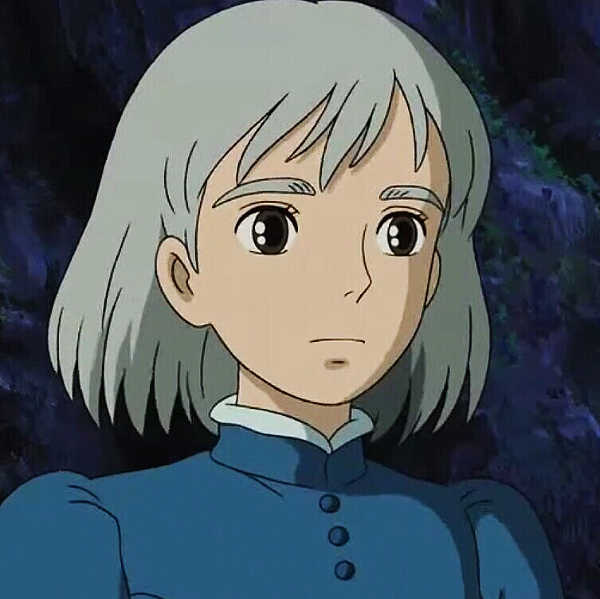
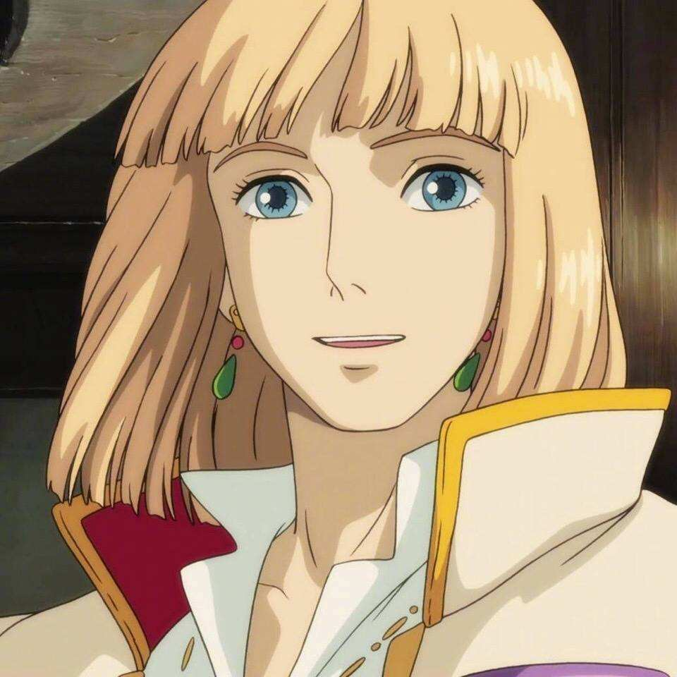
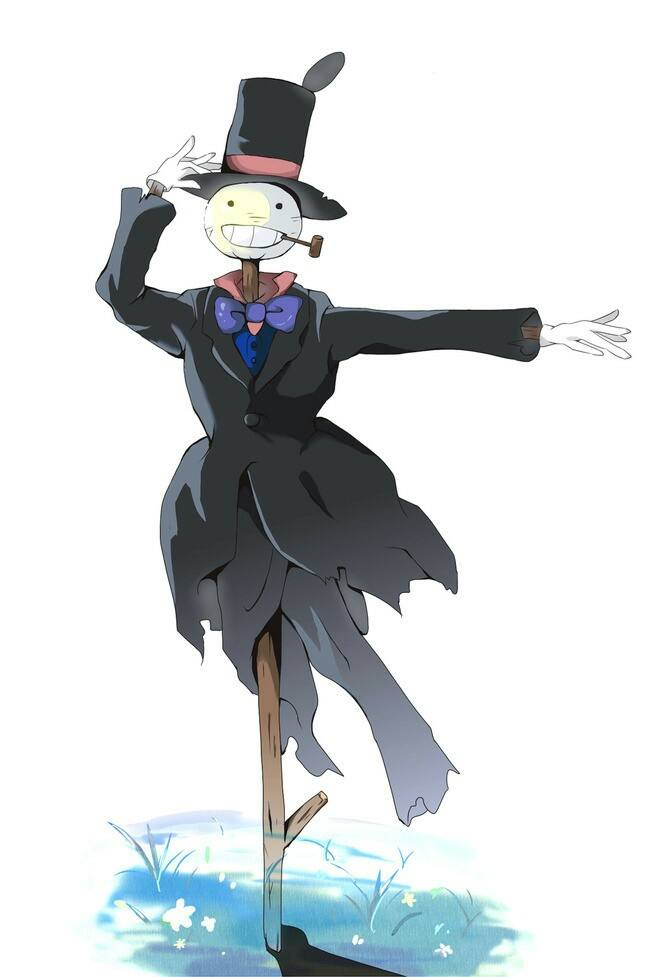
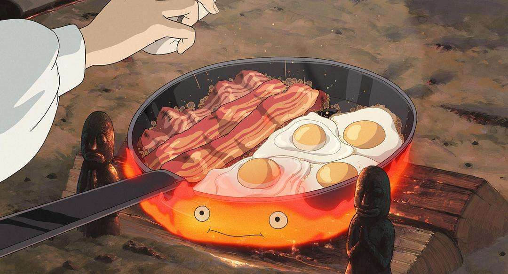
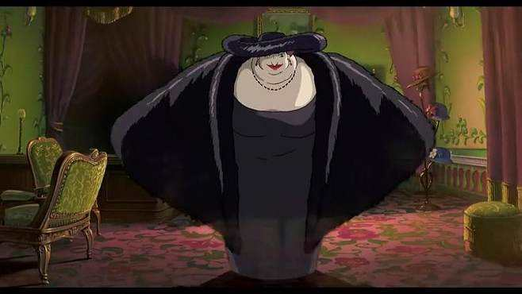
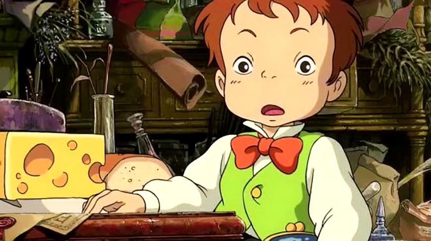

|  |
 |
| 她在片中是帽子店老板的长女，一个相貌清秀且心地善良的少女。出生于1886年的6月中旬。因为被荒野女巫出于嫉妒施展了诅咒，变成一个90多岁的老婆婆，以清洁妇的身份住进了哈尔的移动城堡。善良的苏菲，在父亲死后依然坚持留守帽店，在受到诅咒后也并不对人生绝望，她用博大的爱心同移动城堡里不近人情的火之魔和小孩都结下了深厚友情，而在面对曾诅咒自己的女巫时，依然不计前嫌给予自己的仇人以真诚的帮助。而当哈尔有危险，她更是奋不顾身舍命相助。她有着热诚善良而宽厚的性格，看似坚强而有些小霸道，实则内心如同深海般广博 |
拥有英俊非凡的外貌，却有着完全不能为人所知的内心。哈尔是移动城堡的主人，是宫廷巫师沙莉曼（或许是女王）的关门弟子，传说中是个会吃掉美丽姑娘心脏的巫师，为了生活可以自由，常常在不同地区使用不同的名字。其拥有强大的魔法，却不理会皇宫的征召，每天无所事事，在史柏丽王室呆过一段时间；曾经是个胆小怕事的巫师，但在苏菲的帮助下，他终于找到了自己所想要保护的东西，最终与苏菲幸福的生活在一起。 |
|  |
 |
| 本是邻国王子，后来被下诅咒因而变成稻草人，是苏菲变成老婆婆后第一个帮助他的人，变成稻草人后因为头像菜头所以苏菲给它取了一个名字叫“菜头” |
卡西法，是火恶魔，前身是流星——星之子。在下流星雨的湿地高原夜晚与少年哈尔以“心脏”订下契约，后居住在城堡壁炉中，是移动城堡的动力来源。卡西法的主食是木柴，但蛋壳、培根、荷包蛋类副食品也很喜欢，因吃被莎莉曼带来的偷窥虫而吃坏肚子，减弱法力。卡西法负责城堡的行走、用火等，被夸奖“魔法是一流的”时候会害羞，害羞时火焰呈现桃红色，并会在夸奖后提高火力。一般而言，它只接受哈尔的命令，但也听从苏菲半强迫的话，让她在它上面煮东西。讨厌战火的火，认为它们不懂礼貌。后来虽然苏菲使它获得自由，但它还是选择回来。他说：“我想和大家在一起！” |
|  |
 |
| 荒野女巫以前曾是个伟大的魔法师，却因和恶魔作交易，不敌邪恶诱惑，导致身心都被吃掉，成为误入歧途的魔女，但本身并不觉得自己是在做坏事，五十年前被赶到荒地。因哈尔的逃避而迁怒苏菲，是使苏菲变成老人的元凶。使唤著许多橡胶人手下，是个只会降咒不会解咒的魔法师，后来被莎莉曼夫人用计夺走了法力，因而恢复原本衰老的年岁，也因变老而造成脑筋不灵光，爱好似乎是味道很重的雪茄，对哈尔的心脏有着高度的偏执，有时行为不可理喻，但（失去法力后）大体来说都没有恶意，并且在必要的时候会给年轻人们一些必要的忠告。失去法力后被称作奶奶，与苏菲哈尔一家住在一起。 |
马鲁克 是个乖巧听话的小男孩，但餐桌礼仪有待加强。师父不在家时，会以魔法斗篷变身老人接待来客，也会帮忙 苏菲作收衣服等家事，相当喜爱苏菲，担心苏菲会和哈尔一起离去，后因苏菲保证“我们是一家人”而雀跃不已。讨厌吃鱼和马铃薯，腰间总是系着大荷包。一开始就很喜欢吠吠（茵茵），虽然对一起进来的荒野女巫有戒心，但却主动询问哈尔能不能养狗，后来常和吠吠（茵茵）一起行动、玩耍。 |